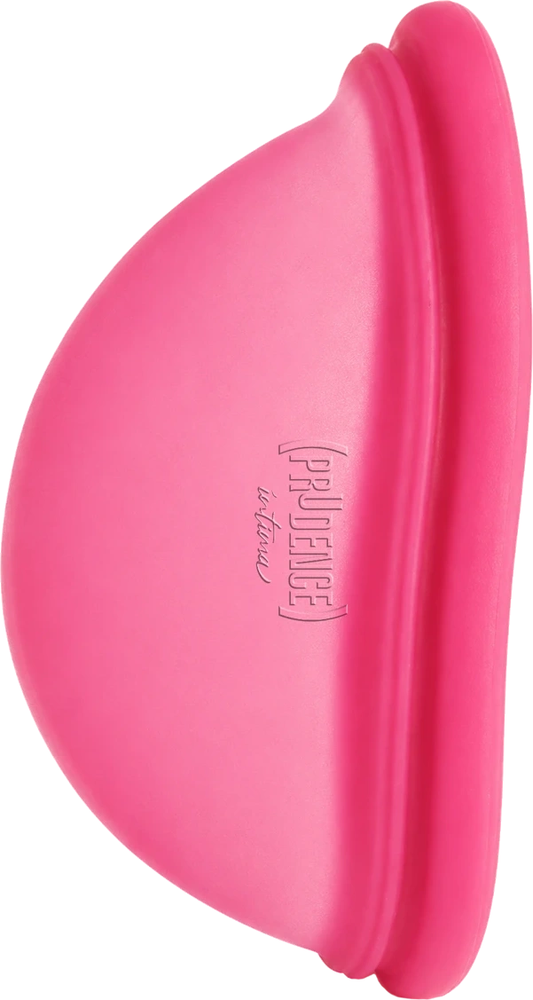
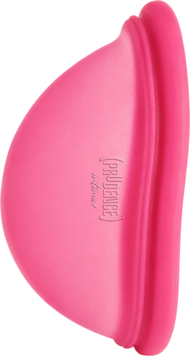
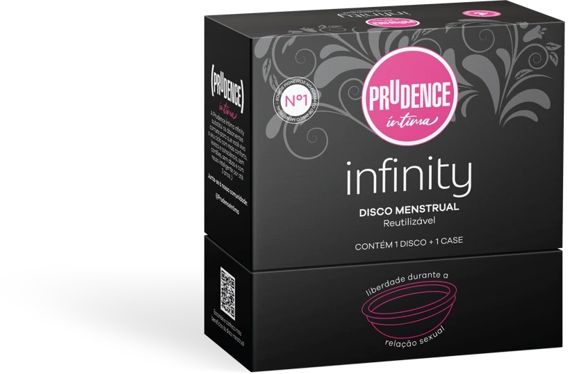
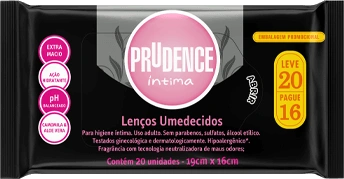

MACIO E ANATÔMICO
Silicone 100% de grau médico, sem BPA.
PRUDENCE INFINITY
Um disco menstrual flexível e reutilizável que coleta o fluxo menstrual.
Veja como usar
Silicone 100% de grau médico, sem BPA.
Tempo indicado na embalagem. Siga o folheto de uso.
Até 3 anos, conforme os cuidados e as instruções.
Leia as instruções da embalagem e do folheto interno antes de usar.
Conheça a colocação, a retirada e os cuidados com o disco. Comece sempre pelo manual.
Pressione o aro em formato de “8”. Insira com calma, conforme o folheto.
Posicione atrás do osso púbico, seguindo as instruções do Infinity.
Retire com cuidado e siga o manual para higienizar e conservar.
INFINITY × MÉTODOS TRADICIONAIS
O Infinity coleta.
Os absorventes absorvem.
Compare o uso e os cuidados de cada opção.
Deslize a tabela para comparar as três opções →
| Compare as opções |  | Absorvente externoDescartável | Absorvente internoDescartável |
|---|---|---|---|
| O que faz | Coleta o fluxo | Absorve o fluxo | Absorve o fluxo |
| Onde fica | Internamente, atrás do osso púbico | Na roupa íntima | No canal vaginal |
| Depois do uso | Higienizar para reutilizar | Descartar após a troca | Descartar após a troca |
| Reutilização | Um produto para vários ciclos¹ | Uma nova unidade a cada troca | Uma nova unidade a cada troca |
| Cuidados | Aprender o encaixe e seguir os cuidados | Trocas e reposição de unidades | Inserção, remoção e trocas conforme a embalagem |
¹ A embalagem indica reutilização por até 3 anos, conforme os cuidados. Adaptação e preferência são individuais. Produtos internos exigem atenção às instruções e aos limites de uso de cada fabricante. Infinity não é contraceptivo e não protege contra ISTs. Informações gerais sobre os formatos.
O Infinity pode acompanhar vários ciclos, com higienização e conservação. Os absorventes descartáveis precisam de uma nova unidade a cada troca.
Experiências, descobertas e rotina com Prudence Íntima.
PERGUNTAS FREQUENTES
A linha apresentada aqui reúne o disco menstrual reutilizável Infinity e os lenços umedecidos biodegradáveis. O estojo acompanha o Infinity.
Consulte as indicações e os cuidados na embalagem dos lenços Prudence Íntima antes de usar e descartar.
É o disco menstrual reutilizável da linha Prudence Íntima. Ele coleta o fluxo menstrual, em vez de absorvê-lo.
Não. O Infinity é reutilizável. O antigo Prudence Softcup é descartável. As instruções de um produto não devem ser usadas para o outro.
A embalagem orienta pressionar o aro em formato de “8” e inserir com calma, encaixando atrás do osso púbico. Para retirar, relaxe, enganche o dedo atrás do aro e puxe com cuidado. Consulte o folheto interno para as instruções completas de uso e higienização.
A embalagem indica uso por até 12 horas. Siga o folheto interno para os limites, o esvaziamento e os cuidados. O produto é reutilizável por até 3 anos, conforme as instruções.
Produtos para coletar o fluxo menstrual não são métodos contraceptivos e não protegem contra infecções sexualmente transmissíveis.
A DKT Store é o canal de compra indicado para a linha. A disponibilidade e os detalhes de venda devem ser consultados na loja.
COMPRE A LINHA NA DKT STORE


O BLOG DE PRUDENCE ÍNTIMA
Ciclo, autocuidado e escolhas. Uma conversa de cada vez.
Entenda a diferença entre coletar e absorver e conheça o Infinity.
Em breveConhecimento, calma e cuidado com você.
Em breveO papel dos cuidados na sua rotina.
Em breveNovos conteúdos sobre ciclo e autocuidado.
Em breve